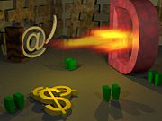
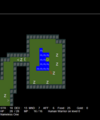
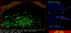
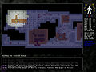
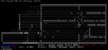
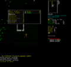
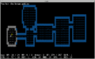
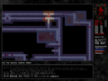

ADOM. Фанарт.
Рогалики (Рог@лики, Rogue-like RPG) — семейство компьютерных RPG-игр. Название, как нетрудно понять, произошло от имени игры Rogue, «бродяга», родоначальника жанра. Как правило характеризуется абсолютным отсутствием графики — в её роли выступают текстовые символы. Впрочем, практически с самого основания жанра существовали и рогалики в тайловой графике (например, Ragnarok, он же Valhalla).
Большинство подобных игр имеет достаточно разветвленный сюжет, со сложной системой прокачки персонажа и различными концовками. В Фидо были представлены RU.GAME.ADOM и несколькими аналогичными эхами.
3.3 Хорошие, годные на русском
4 Я и моя сраная кошка
4.1 Dungeon Crawl
5 Галерея
6 Ссылки
7 См. также
8 Примечания
На сайте Rogue Temple есть небольшая, но удобная статья «Roguelike Definition», где коротко описаны принципы которым должен или может соответствовать среднестатистический рогалик, здесь мы приведём вольный перевод этой статьи:
Игровой мир и его содержимое должен каждый раз создаваться заново случайным образом.
Случайным образом в рогаликах накидывается практически все — от лабиринтов, до названий свитков (то есть, чтобы узнать что за вещь ты подобрал, иногда есть только один выход — заюзать её, что чревато непредсказуемыми последствиями). Таким образом, каждая игра становится уникальной, и рогалики можно проходить более 9000 раз, по-прежнему получая удовольствие от процесса.
Игрок должен платить за свои ошибки и сделаный выбор, иногда даже и ценой жизни. Восстановление сохранённой игры не делает вам чести и может применяться только в случае если игра упала в результате багов.
Записаться можно только при выходе из игры, чтобы потом продолжить её с того же места. Таким образом, любая ошибка может стать непоправимой, а смерть — окончательна.
Всё происходящее в игровом мире происходит в порядке бесконечного цикла, разделённого на отдельные ходы для каждого действия.
Ввиду того, что сэйвы отсутствуют, возможности персонажа ограничены, а ошибки чреваты быстрой смертью, единственная возможность выжить — это тщательно обдумывать каждое свое действие.
Все игровые команды (управление или действия) должны быть доступны в любой момент игры. Не должно быть никаких искусственных ограничений в отдельных ситуациях.
В игре не должно быть строго определённого создателем линейного пути прохождения. Игрок сам выбирает, что ему делать, как и когда.
Игрок должен самостоятельно изучить природу предметов, а также механизм их использования.
Игрок управляет только одним персонажем.
В игре должно быть нечеловеческое количество монстров, предметов, мест для посещения etc.
Предметы, в идеале большую их часть, можно использовать самым удивительным способом, явно не вытекающим из их природы.
Игра становится очень сложной и очень быстро. Выиграть при первом и не только прохождении должно быть почти невозможно. Для того, чтобы приблизиться к победе, игрок должен набраться опыта.
Природа монстров соответствует природе игрока, они могут носить вещи, оружие, имеют такую же систему статистик, как и игрок, а также подчиняются тем же правилам.
Если пойти от противного, то игровой персонаж - это монстр, у которого прописано, что он управляется человеком и по этой причине игнорируется во время обработки ИИ, в остальном всё как у прочих существ.
Игрок взаимодействует с игровым миром посредством интерфейса, основанного на псевдографике.
Это интересно, но рогалик может быть выполнен в псевдо-псевдографике. То есть, игра фактически является «графической», что открывает интересные возможности.
Игра включает в себя убийства всяких разных существ и сбор сокровищ.
В отличие от доминирующих нынче задротских (MMO)RPG персонажи в рогаликах столь же быстро качаются, как и умирают, большую часть времени в рогалики именно играешь, а не задрачиваешь ради очередного левелапа.
Вышеприведенные правила не являются догмой — рогаликом считается и Transcendence — реалтаймовый космический полет в полноценной графике, а иногда даже Diablo. Впрочем, «считать ли Дьябло рогаликом» — один из самых популярных поводов для холивара в среде рогалик-фагов.
В российских интернетах известный как грюй. Многие игры, начиная с Зорк, ввели таинственного и непобедимого монстра grue (надм. страх), который прятался в темноте и пожирал игрока, пытающегося пройти подземелье без фонарика, факела, спичек или другого источника света.
Yet Another Stupid Death (Ещё Одна Дурацкая Смерть[1]). Один из основных принципов рогаликов — «Permadeath», невозможность (помимо savescumming[2]) восстановить погибшего или сделавшего фатальную ошибку персонажа. Таким образом, под этим понимается:
Различные варианты вышеуказанной фразы — локальный мем создателей рогаликов. Сиречь тусовки очень малой и гугель про неё почти ничего не знает, но этот мем открывает всем интересующимся рогаликами, почему в интернетах так много полуфабрикатов. Большинство людей решивших начать свой рогалик слабо представляют с чем им предстоит столкнуться, со стороны рогалик кажется весьма простой программой, которую можно нарисовать левой пяткой минут за десять (возможно виной тому отсутствие графики в большей части рогаликов, а потому любая Y.O.B.A.-игра выглядит внушительней для дилетанта). Поэтому «разработка» рогалика начинается следующим образом: Создатель уведомляет всех какой супер-пупер рогалик он собирается сделать, сколько там будет замечательных фич и так далее. Потом, вдоволь натешив своё ЧСВ видениями Великого Рогалика, наш Творец начинает работу и… тут разработка уходит в бесконечный цикл, обычно завершаясь ничем.
Кроме того, по непонятной причине начинающие рогаликоделы в массе своей пытаются переплюнуть именно ADOM, а не Angband или, скажем, Dungeon Crawl. Поэтому, как правило, игра начинается с того, что герой приходит в маленькую деревеньку. Правда, в отличие от Адома, этим она обычно и заканчивается.
Следует отметить, что если игра дошла до стадии пришел в деревеньку, то автор уже чего-то достиг. Как минимум бегающая по экрану @, обработку препятствий и прочее. Обычно курение Бискапа заканчивается ещё на стадии разговоров.
В этот рогалик стоит поиграть уже потому, что к нему можно писать макросы, что значительно упрощает его прохождение.
Про задротство. В большинстве Рогаликов им заниматься невыгодно и не нужно. Сабж в принципе не исключение, если вы не хотите повысить шансы на прохождение этой игры без читов с 0,00000000...001% (~10^(-14)) до хотя бы 1%. Итак, способы задротства - прокачка навыков происходит за счёт использования этих навыков соответственно схема выглядит след. образом:
1)Используем навык 2)Повтор п.1 многА раз ... n) Ну вы поняли n + 1) Ну и как ты собираешься качать навык при ограничении в скилл-поинтах? Артманей?
Тактик в игре много, есть возможность играть от хоббита-ниндзи до Бесёнка, мутировавшего к концу игры в Diablo. Впрочем, противники тоже жесткие встречаются.
Вообще игра доставляет, можно смотреть on-line как играют профи, и прочие кошерные вещи.
      
www.roguetemple.com — интересный сайт для любителей свежих рогаликов.
Roguebasin — англоязычный сайт на котором собраны и рассортированы рогалики на любой вкус и цвет, а самое главное: огромная библиотека статей по созданию рогаликов.
Amit Patel’s Home Page — англоязычный сайт, как можно догадаться, неймфага Amit Patel`а, содержит Over 9000 полезной копипасты по всеразличным алгоритмам. Курение этого сайта, позволят избежать изобретения целого ангара велосипедов.
http://rlgclub.ru — отечественный клуб любителей рогаликов, недавно переехал на wiki-двигатель.